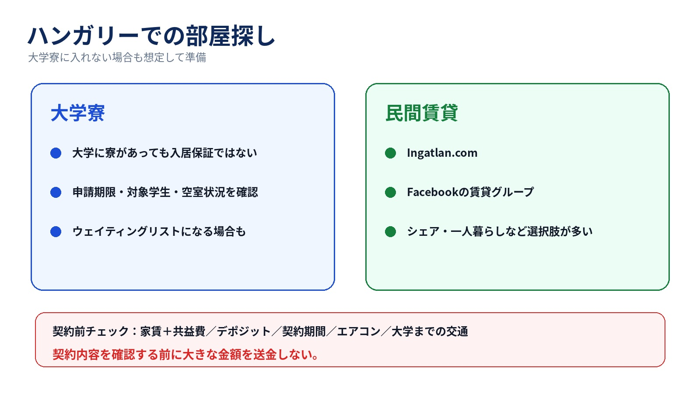
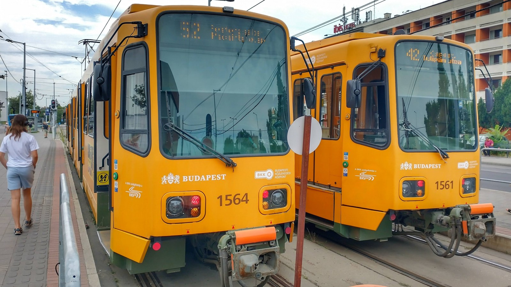
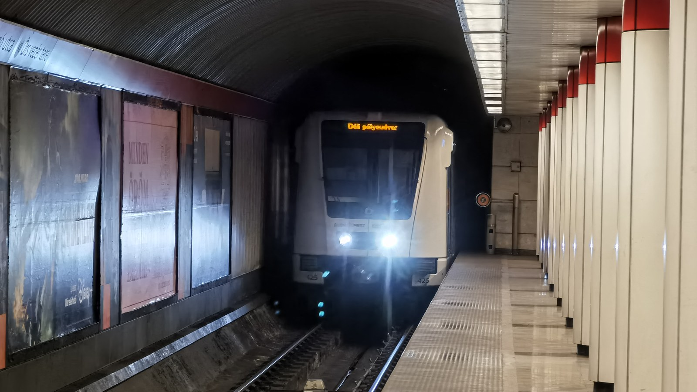
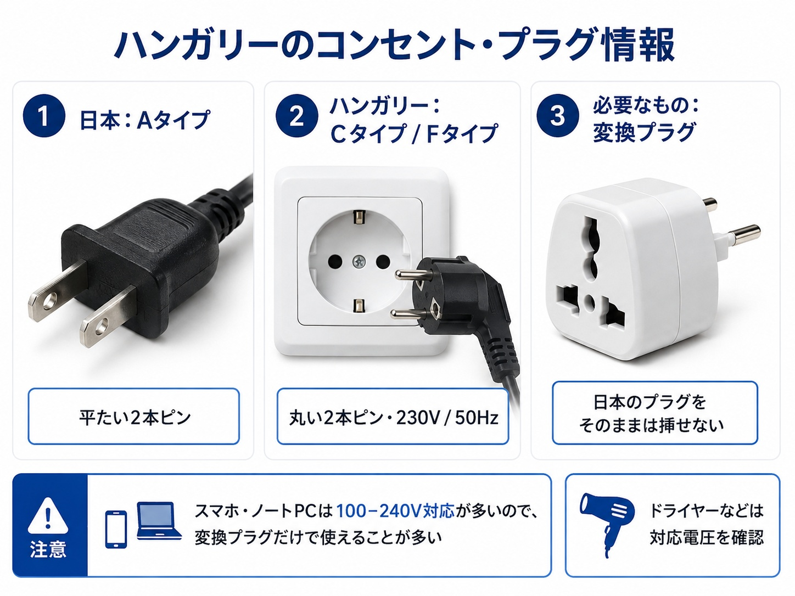
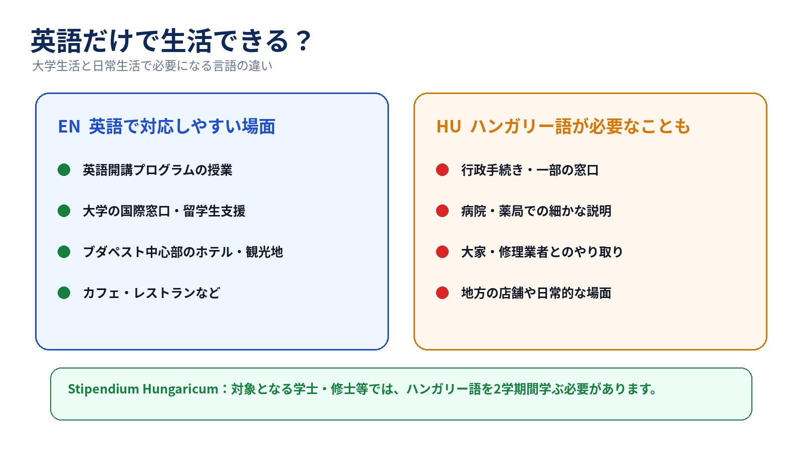

9. 部屋探し｜大学に寮があっても入れるとは限らない

ハンガリー留学では、 大学寮に入る方法と、自分で民間の部屋を探す方法があります。
大学によって、申請期限、学生区分、学年、選考条件、部屋数などが異なります。
また、年度によって空室状況も変わるため、 大学が学生寮を用意している場合でも、 その年は新入生へ十分な部屋を提供できないこともあります。
大学によって扱いは異なりますが、例えばELTEでは、 Stipendium Hungaricumの奨学生が大学寮に入る場合でも、 寮の料金が奨学金の住居補助額を上回ると、その差額を支払う必要があります。
「奨学生だから寮費は必ず無料」と考えず、 入寮前にその年度の寮費と奨学金の適用方法を大学へ確認しておくことをおすすめします。
申請しても入寮できなかったり、 ウェイティングリストになる場合もあります。
そのため合格後は、
まで大学に確認しておく方が安全です。
また、大学の公式案内だけでは、 その年度の実際の入寮状況が分からないこともあります。
そのため、 実際にその大学へ通っている現役生に、 今年の寮事情を聞いておくのもおすすめです。
民間の部屋はどうやって探す？
大学寮に入れなかった場合や、 一人暮らし・シェアを希望する場合は、自分で部屋を探す必要があります。
ハンガリーでは、 Ingatlan.com のような不動産サイトや、 Facebookの賃貸グループなどを利用して物件を探す方法があります。
Facebookでは、
などで検索すると、 物件やシェアルームを募集しているグループが見つかります。
契約前に確認しておきたいこと
- 共益費・光熱費
- デポジットの金額
- デポジットの返還条件
- 契約期間
- 途中退去の条件
- エアコンの有無
- 大学までの交通手段
また、掲載写真だけで決めず、 可能であれば実際の部屋や契約書も確認しましょう。
4. ブダペストの公共交通


ブダペストでは、地下鉄、トラム、バス、トロリーバス、 郊外鉄道HÉVなどを利用できます。
公共交通網がかなり発達しているため、 多くの学生は車を持たずに生活できます。
BudapestGOを入れておこう
ブダペストで生活するなら、 BudapestGOをスマートフォンに入れておくと便利です。
BudapestGOはブダペスト交通センターBKKの公式アプリで、 経路検索、リアルタイムの運行情報、チケット・定期券の購入などができます。

学生なら公共交通がかなり安い
有効なハンガリーの学生証を持つなど、 対象条件を満たす学生は非常に安い学生向け定期券を利用できます。
ブダペスト市内＋ペシュト県が中心の学生向け。
945 Ft／30日ハンガリー国内を広く移動したい学生向け。
1,890 Ft／30日※学生料金の利用には、有効な学生証などの条件があります。
改札がなくてもチケットチェックには注意
ブダペストの公共交通には、 日本のような自動改札ゲートが基本的にありません。
その代わり、地下鉄の入口・出口付近や車内などで 係員によるチケット・定期券のチェックがあります。
学生証と定期券の有効期限は確認しておきましょう。
5. ハンガリー国内の移動

ブダペストから地方都市へは、鉄道や長距離バスを利用できます。
運行ルートや時刻は変更されることがあるため、 利用時にはMÁVなどの公式情報で最新の時刻表を確認してください。
6. ハンガリーの気候｜今日の気温と1〜12月の傾向
夏は暑さ、冬は冷え込みへの備えが必要です。住む都市を選ぶと、最新の気温予報、月別の平年値、過去2年の気温差を確認できます。
気温データを読み込んでいます。
現在の気温はMET Norwayの最新予報に基づく値です（実測値ではありません）。データは原則1時間ごとに更新。HungaroMetの最新情報も確認できます。
月別の平均気温｜例年と過去2年を比較
| 読み込み中… |
表の右側が見えない場合は、横にスクロールして過去2年と降水量を確認できます。
平年値は1991〜2020年の30年平均。過去2年は前年・前々年の月平均を比較し、平年値との差を示します。NASA POWER／MERRA-2の都市座標周辺の格子データで、街の観測所の実測値とは異なります。降水量は雨と雪を水量に換算した合計です。欠測値は「—」と表示します。
雨・雪と地域の違い
降水は年間を通じてあります。夏にはにわか雨や雷雨もあるため、日差しへの備えと折り畳み傘を用意しましょう。西側や丘陵部と、東・南側の平野部では降水の傾向が異なり、同じ国でも都市によって差があります。
冬は雪が降ることがありますが、降雪量や積雪の期間は年・地域で変わります。都市部でも凍結やぬかるみに備え、滑りにくく水が入りにくい靴が役立ちます。月平均気温だけで、寒波や猛暑日の強さは判断できません。
季節ごとの服装と住まいの準備
| 時期 | 準備の目安 |
|---|---|
| 3〜5月 | 長袖＋脱ぎ着できる上着。朝晩の冷え込みや雨に備える。 |
| 6〜8月 | 半袖・通気性のよい服、帽子、水分補給。住居のエアコンと日当たりを確認。 |
| 9〜11月 | 9月の暑さに備えた薄着と、徐々に冷え込む時期の上着を両方用意。 |
| 12〜2月 | 厚手のコート、手袋、マフラー、重ね着。暖房と防水性のある靴も確認。 |
8. コンセントは日本と違う｜変換プラグを忘れずに

これは留学初日から困る可能性があるので、 事前に知っておきたいポイントです。
日本では平たい2本ピンのAタイプが一般的ですが、 ハンガリーでは主にCタイプ・Fタイプのコンセントが使われています。
電源は230V・50Hzです。
特にノートパソコン、スマートフォン、タブレット、カメラなどを使用するなら、 ヨーロッパ用の変換プラグを日本から持っていくことをおすすめします。
おすすめの変換プラグ
TESSAN 変換プラグ 韓国海外 SEタイプ コンセント変換器
ドイツ、フランス、オランダ、ハンガリー、スペインなど、 ヨーロッパの国に対応した変換プラグです。
変換プラグと変圧器は別物
スマートフォンやノートパソコンのACアダプターには、
と書かれているものが多くあります。
この場合はハンガリーの230Vにも対応しているため、 基本的に変圧器は不要で、 プラグ形状を変える変換プラグだけで使用できます。
一方、ドライヤーやヘアアイロンなどには100V専用製品もあります。
必ず本体やACアダプターの対応電圧を確認してください。
7. ハンガリーの公用語と英語の通じやすさ

英語で開講される大学プログラムであれば、 授業は基本的に英語です。
大学内やブダペスト中心部では英語が通じる場面も多くあります。
一方、地方の店舗、行政手続き、病院、大家とのやり取り、 配達や修理などでは、ハンガリー語しか通じない場面もあります。
そのため、簡単なハンガリー語を覚えておくと生活がかなり楽になります。
Stipendium Hungaricum生はハンガリー語の授業にも注意
Stipendium Hungaricumでは、外国語で学ぶ フルタイムの学士・修士・一貫制修士課程の奨学生は、 原則としてハンガリー語を2学期間学ぶ必要があります。
要件を満たさない場合には、 月額給付に影響する可能性もあります。
現地で初めてハンガリー語に触れるより、 日本にいるうちに少し勉強しておくと楽です。
また、日本語で学べるハンガリー語教材は現地では見つけにくいため、 日本から1冊持っていくことをおすすめします。
おすすめ教材
『ハンガリー語の入門 単行本 – 2001/7/1』早稲田みか 著
日本語で基礎からハンガリー語を学びたい人向けの教材です。
『ニューエクスプレスプラス ハンガリー語［音声DL版］』 早稲田みか・バルタ・ラースロー 著
会話や基本文法を日本語で学びたい人に使いやすい教材です。